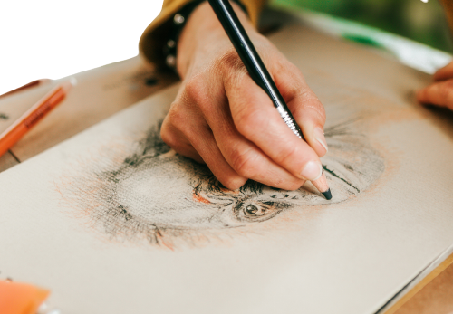

Drawing
Drawing is a form of visual art in which an artist uses instruments to mark
paper or other two-dimensional surface. Drawing instruments include graphite pencils, pen and ink, various kinds
of paints, inked brushes, colored pencils, crayons, charcoal, chalk, pastels, erasers, markers, styluses, and
metals.
A drawing instrument releases a small amount of material onto a surface, leaving a visible mark. The most common
support for drawing is paper, although other materials, such as cardboard, wood, plastic, leather, canvas, and
board, have been used.
